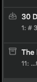
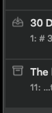

Hello,
Is there a cue of where the current draft is stored (Inbox / Flagged … / ?) when opening it? The search shows that using icons, but I’m not sure where to see this in the editor UI.

Thanks!
Hello,
Is there a cue of where the current draft is stored (Inbox / Flagged … / ?) when opening it? The search shows that using icons, but I’m not sure where to see this in the editor UI.

Thanks!
I think this is only visible at the Draft List (cmd +1). But adding the icons to the tag entry bar (which already has info on the flagged status) could indeed be helpful for when the Draft List is hidden?
Also, if you come from a search, the Draft List is not updated to focus on the current “Store” and the draft in view might not even be visible in the list…
If you tap on the information icon it tells you in there what folders it appears in.
Ah, I found the icon in the bar below!
Thanks.